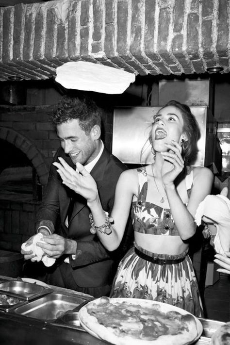

Nuestra pizza fue creada desde el año 1950. Nuestra fundadora Michelle Morales siempre hizo nuestras recetas con amor. Empezo a crear nuevas recetas desde su propio hogar y con ayuda de sus hermanos fueron construyendo una nueva idea para la población. La señora Michelle siempre busco destacar en su cocina y siempre le gusto innovar. Con muchos años de trabajo y esfuerzo logró empezar su primer restaurante de Pizzas artesanales, fue un exito total. Al paso de los años Michelle fue involucrando a su familia para dirigir el negocio. En 1980 tuvieron la oportunidad que colocar locales al alrededor del pais y en diferenetes zonas. Michelle siempre quiso que sus recectas fueran probadas por las demás personas. Hasta el día de hoy se siguen realizando sus recetas y sigue siendo las favoritas de los chápines. Siempre trabajando con el sabor artesanal pero nunca dejando de innovar.
